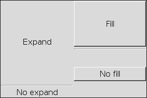

Adds child to the box starting from the begining. If the box is a GtkVBox, the child will be added starting from the top. If the box is a GtkHBox the child will be added starting from the left.
The optional argument expand, controls whether or not the widget should consume all of the space available when the container and the child are shown. Consuming the available space does not mean the child will be resized to fit the container.
See also: pack_end()
Example 19. GtkBox' expand and fill parameters in action
This example demonstrates the expand and fill parameters.
At first two GtkLabels are created and pack_start() 'ed to a box, the first expanded and the second unexpanded.
The right side of the window shows the fill parameter: Two buttons are added to the box, both expanded, but only the first one filled: The second one takes half of the space, but keeps the ideal size required to display all the text, while the first one takes all the space for display.

<?php
//GtkBox expand and fill parameter example
/**
* Example 1: The "expand" parameter
*/
$boxExpand = new GtkVBox();
$lblExpand = new GtkLabel('Expand');
$lblNoExpand = new GtkLabel('No expand');
//Add the expanded Label with the
//expand parameter set to true
$boxExpand->pack_start($lblExpand, true);
//to see the difference better
$boxExpand->pack_start(new GtkHSeparator(), false, false, 3);
//Add the unexpanded label with the
//expand parameter set to false
$boxExpand->pack_start($lblNoExpand, false);
/**
* Example 2: The "fill" parameter
*/
$boxFill = new GtkVBox();
$btnFill = new GtkButton('Fill');
$btnNoFill = new GtkButton('No fill');
//Add the filled button to the box
//with the fill parameter set to true
$boxFill->pack_start($btnFill, true, true);
//to see the difference better
$boxFill->pack_start(new GtkHSeparator(), false, false, 3);
//Add the unfilled button to the box,
//with the filled parameter set to false
$boxFill->pack_start($btnNoFill, true, false);
/**
* Add both of the example boxes to the window
*/
$wnd = new GtkWindow();
$wnd->set_title('Pack test');
$wnd->connect_simple('destroy', array('gtk', 'main_quit'));
$wnd->set_size_request(300, 200);
//Set the box homogenous, so that left and right
//example get the same space
$hbox = new GtkHBox(true);
//Add the expand example box
$hbox->pack_start($boxExpand, true);
//Add the fill example box
$hbox->pack_start($boxFill, true);
//Add the main box to the window
$wnd->add($hbox);
$wnd->show_all();
Gtk::main();
?> |